操作系统期末复习¶
参考笔记：Isshiki修's Notebook
我的os笔记方式和ads类似，还是将重心放在知识框架的梳理上，对于笔记中提到的东西如果有点陌生，还是建议去翻找ppt或者王道~
0 - Overview¶
0.1 操作系统定义¶
- 职能角度 - 资源管理
- 存在角度 - 管理用户程序的软件程序，kernel是计算机开机后一直在运行的程序
0.2 操作系统评价方式¶
- 可靠性 - 异常处理机制
- 安全性 - 权限管理机制 - 不同权限模式
- 易用性 - 系统调用机制
- 操作系统提供的接口：
- 命令接口 - 给用户使用的
- 程序接口 - 就是系统调用，给编程人员使用的
- 操作系统提供的接口：
- 高效性 - 任务执行机制 - 分时系统实现体感上的并行
- 公平性 - 进程管理机制 - 避免饥饿现象
- 可拓展性、易维护性等开发者角度
0.3 操作系统架构¶
- 单处理器系统 - 有且仅有一个单核的通用处理器（可以有别的不运行线程的专用处理器）
- 多处理器系统 - 多个单核的通用处理器 - 吞吐量提升，但非线性提升
- 集群系统 - 多个独立的计算机系统作为节点，通过冗余实现高可用服务，通过并行实现高性能计算
- 对称集群 - 各个节点互相监督
- 不对称集群 - 替补关系
0.4 操作系统任务处理¶

- 批处理系统：成批、串行，交互性差
- 单道批处理阶段 - 同一时间一个任务，会导致CPU长时间空闲
- 多道批处理阶段 - 多道，宏观上并发（王道原话：“并行”，所以这也是多道批处理的一个特点，但是没有达到真正意义上的进程并行），微观上串行
-
分时系统：“体感上”并行，按照时间片进行进程间切换
- 同时性、交互性、独立性、及时性
-
实时系统：特定时间完成特定任务
- 例如股票交易系统，因为股市的交易行情是实时变化的
-
分布式系统：多台计算机共同完成一个任务
几乎所有现代操作系统都是“多任务操作系统”，包括单cpu操作系统和多cpu操作系统。
在IBM-PC中，操作系统称为微型计算机操作系统。
0.5 操作系统结构设计¶
有中心：
- 宏内核：耦合所有主要功能，效率高，可靠性低
- 微内核：只提供最基本功能，可靠性高，可拓展性高
- 基本功能：进程（线程）管理、低级存储器管理、中断和陷入管理
- 特点：灵活性和拓展性、可靠性和安全性、可移植性、分布式计算
混合系统结合了宏内核和微内核的设计思路。
分层网状：
- 分层设计：类似计网，\(i\)用\(i-1\)层接口，开发维护方便，但逐层接口调用导致效率受限
-
最显著的不足：设计困难
-
模块化设计：非递进式，将操作系统划分成独立模块
外核：记录已分配给各个虚拟机的有关资源。
0.6 操作系统运行原理¶
引导 \(\to\) 用户态 |（中断（计时器）、系统调用）| 内核态
引导相关王道刷题记录：
- 存放操作系统自举程序的芯片是ROM
- 计算机操作系统的引导程序位于硬盘中
- 计算机开机后，操作系统最终被加载到RAM
- 计算机启动过程：CPU加电，CS:IP指向FFFF0H \(\to\) 执行JMP指令跳转到BIOS \(\to\) 登记BIOS中断程序入口地址 \(\to\) 硬件自检 \(\to\) 进行操作系统引导
原语：可被条用的公用小程序，处于操作系统底层，具有原子性，调用频繁。
操作系统中，通道技术是一种硬件技术。
不同操作系统提供的系统调用接口不同。
中断：
-
从紧急程度：可屏蔽中断、不可屏蔽中断
-
从触发原因：内中断（异常等程序导致的）、外中断（硬件产生，时钟中断、I/O结束）
中断相关王道刷题记录：
- 在中断发生后，进入中断处理的程序属于操作系统程序。被中断的程序本身可能是用户程序，也可能是OS程序，但是进入的一定是OS程序
- “访管”指令仅在用户态下使用。是system call，将用户态变为核心态的程序。属于内部中断。内核态有且仅有这个指令无法执行。
- 处理外部中断时：
- 由硬件保存（中断隐指令自动保存）：PC（断点）、PSW（程序状态字）内容，TLB、cache内容；将CPU模式改为内核态；
- 由操作系统完成：保存通用寄存器内容，执行系统调用的服务例程，保存中断屏蔽字
1 - Process Management¶
进程是资源分配和管理的独立单位
1.1 进程基本概念¶
1.1.1 进程的形式¶
-
内核态虚拟内存 - 元数据（进程控制块PCB）
-

-
用户态虚拟内存 - 实际需要的数据资源
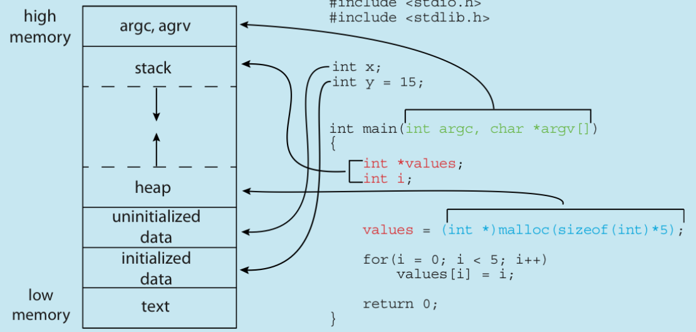
-
静态部分
- text section - 代码
- data section - 进程全局变量、静态变量
- 动态更新部分
- heap - 被动态分配的内存
- stack - 暂时性数据，函数传参、返回值等
1.1.2 进程的状态¶
进程的状态和转换关系：
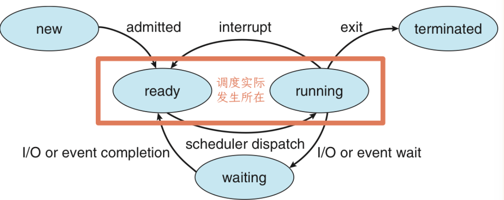
实现调度需要维护等待队列（可能有多个）和就绪队列：
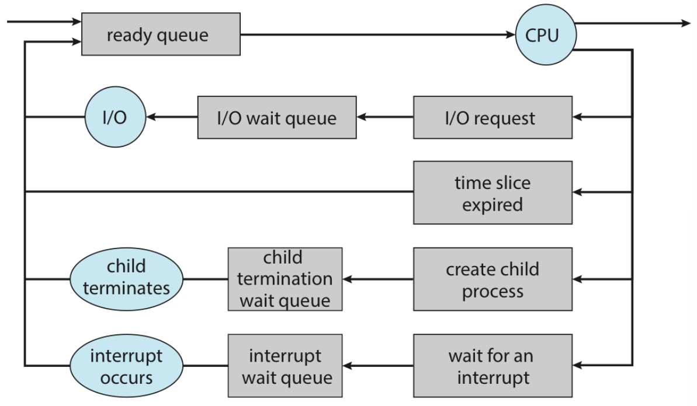
1.2 进程管理¶
1.2.1 创建 - fork()¶
- 复制父进程数据，即直接
fork - 载入新程序并继续执行，
fork后execXX()
相关技术：COW、vfork()
1.2.2 终止 - exit()¶
子进程通过exit()终止之后（僵尸进程）需要父进程的wait()去回收资源，如果此时父进程被终止则变成孤儿进程，交由init/systemd来wait()或通过级联终止来避免。
1.2.3 通信¶
- 信号量
- 共享内存 - 通过系统调用建立，更快
- 信息传递 - 不需要处理数据冲突，少量有用，分布式系统更容易实现
- 文件/管道（本质上也是一种文件，单向传输）
1.3 进程调度¶
- 调度分类
- 抢占式 - 不占有资源的进程索取cpu资源
- 非抢占式 - 已拥有资源的进程主动释放cpu资源
- 调度过程 -
__switch_to- 上下文切换 - 寄存器、进程状态、管理信息
sret回用户态sepc
- 调度算法指标
- cpu使用率
- 吞吐量 - 单位时间内完成的进程数
- 周转时间 -开始建立 \(\to\) 进程完成
- 等待时间 - = 周转时间 - 运行时间
- 响应时间 - 发出请求 \(\to\) 第一次响应
- 调度算法
- FCFS - 非抢占式、实现简单
- SJF - 非抢占式、平均等待时间最小，会导致饥饿现象且运行时间不好预估
- SRTF - 抢占式（剩余运行时间最短）、平均等待时间最小，会导致饥饿现象且运行时间不好预估
- RR - 抢占式、解决饥饿现象，频繁切换会导致较高的dispatch latency
- priority scheduling - 和SJF/SRTF一样分成抢占式和非抢占式两种，会导致饥饿现象
- priority aging - 避免饥饿现象，优先级随着等待时间不断增长
- 调度设计
- multilevel queue scheduling - 队列间根据优先级抢占式调度，队列内根据需求采取不同的调度算法
- multilevel feedback queue scheduling - 允许进程在队列间转移（占有太久cpu -- 优先级
--；等待太久 -- 优先级++）
1.4 线程¶
定义：进程内可调度的执行单元
目的：减小fork和切换的开销
进程间线程共享静态资源，各自维护必需的动态资源：便于线程间通信、任务粒度小减少响应时间；进程内出问题会影响所有线程、内存保护问题。
多线程模型：
- 用户级多线程：支持更多线程数，更容易自定义线程调度算法
- 内核级多线程：单线程阻塞不导致整个进程阻塞，可以利用多核实现并行
- 关系（用户-内核）：一对一、多对多、多对一
2 同步¶
2.1 同步工具¶
2.1.1 相关定义¶
-
race condition：两个进程同时访问一个资源，并且需要对资源作出修改（这个操作在汇编级别不是原子的）的情况，如果不加访问限制则会导致使用过时数据从而写入错误结果。
-
临界资源：只能被至多一个用户占有的资源
-
critical section（临界区段）：访问临界资源的代码段
1 2 3 4 5 6 7 8 9 | |
-
临界区问题：如何保证最多只有一个用户在执行临界区段的代码
-
解决方案要求：
- 临界互斥
- 选择时间（选择下一个进入临界区的进程）有限
- 等待时间有限
2.1.2 同步算法¶
jjm复习课：今年的同步算法比较简单。
内核态的同步问题：对于单处理器只需要在中断发生后禁止中断即可；对于多处理器我们通过非抢占式内核实现内核态的进程数量唯一。接下来是一些更普适的解法。
2.1.2.1 Peterson's Algorithm¶
限制：参与竞争的进程只能有两个
1 2 3 4 5 6 7 8 9 10 11 12 13 14 | |
可以通过对各种情况的枚举完成对解决方案三条要求的证明。
但其实这个方法不适用于现代处理器，因为采用的是乱序流水线，READY[i] = true和TURN = j这两条指令没有严格的执行顺序。
2.1.2.2 Memory Barriers¶
加入memory_barrier()主动禁止指令重排：
1 2 3 4 5 6 7 8 9 10 11 12 13 14 15 | |
这里还涉及到两个memory model的定义：
- 强有序(strongly ordered)：进程对内存做的修改立刻对其它处理器可见；
- 弱有序(weakly ordered)：进程对内存做的修改不立刻对其它处理器可见；
2.1.2.3 Hardware Instructions¶
我的理解是把一些操作在硬件层面包装成原子操作。
test_and_set()：
1 2 3 4 5 6 7 8 9 10 11 12 13 14 | |
为了实现“有限等待时间”的需求，我们需要采取手动分配锁的调度方式：
1 2 3 4 5 6 7 8 9 10 11 12 13 14 15 16 17 18 19 20 | |
由释放锁的进程决定下一个进入临界区的进程，采用从\(i + 1\)开始的遍历形式保证选择顺序使得不会饥饿。
compare_and_swap()：
1 2 3 4 5 6 7 8 | |
和test_and_set()功能类似但是更加普适、可拓展性好。
通过这个原子操作，我们可以构造Atomic Variables（原子变量）：
1 2 3 4 5 6 | |
此时我们直接使用了封装好的原子操作实现了变量修改的原子性，不需要涉及临界区的讨论。
2.1.2.4 Mutex Locks - 互斥锁¶
是对2.1.2.3的硬件层面原子操作在软件层面的封装：
1 2 3 4 5 6 7 8 | |
这里也引入了两个概念：
- 忙等待：在
entry的等待阶段依然占用CPU资源（使用while） - 自旋锁(spinlock)：使用忙等待的互斥锁
可以通过系统调用避免忙等待，但是要权衡等待浪费的cpu资源和调度开销。
2.1.2.5 Semaphores - 信号量¶
提供的两个标准化原子操作接口：
1 2 3 4 5 6 7 | |
- counting semaphore - 计数信号量
- binary semaphore - 二值信号量：\(0 \le S \le 1\)，表示资源只有一个
应用：
- 程序间通信（或手动串行）
1 2 3 4 5 6 7 8 9 | |
1 2 3 4 5 6 | |
优化：
避免忙等待：
1 2 3 4 5 6 7 8 9 10 11 12 13 14 15 16 17 18 19 20 | |
2.2 同步问题例子¶
2.2.1 生产者消费者问题 - The Bounded-Buffer Problem¶
通过信号量保障生产消费对缓冲区使用的互斥：
1 2 3 4 | |
2.2.2 读者写者问题 - The Readers-Writers Problem¶
由读写冲突和写写冲突引发的问题，通过以下信号量解决（避免饥饿）：
1 2 3 4 5 6 7 8 9 10 11 12 13 14 15 16 17 18 19 20 21 22 23 24 25 26 27 28 | |
其中，由于read_count有比较操作，单一信号量不支持这样的原子操作，所以可以理解为read_count和mutex一起构成了一个原子变量。
2.2.3 哲学家就餐问题 - The Dining Philosophers Problem¶
由于筷子的互斥我们对每一个筷子维护了一个信号量，但是这种直接的解法可能会导致死锁（每个哲学家都拿了自己右手边的筷子），我们有以下解决方案：
- 允许最多 4 位哲学家同时获取筷子；
- 哲学家必须同时获取两个筷子，而不能抓一支等一支；
- 为了实现这一点，“抓筷子”这件事应当在一个临界段中完成；
- 奇数哲学家先拿左手的筷子，偶数哲学家先拿右手的筷子，这样不会产生循环等待。
2.3 死锁问题¶
2.3.1 相关定义¶
- 死锁：一个处于占有资源且等待资源的状态的线程集合，互相等待彼此占有的资源。
- 资源分配图：
- 存在环 \(\to\) 有可能处于死锁状态
- 不存在环 \(\to\) 不可能处于死锁状态
- 环内节点只有一个实例 \(\to\) 一定处于死锁状态
-
安全状态：存在安全序列
- 安全状态 \(\to\) 一定可以避免死锁
- 不安全状态 \(\to\) 不一定可以避免死锁
-
死锁条件（必须同时满足）：
- 互斥 - mutual exclusion
- 持有并等待 - hold and wait
- 非抢占 - no preemption
- 循环等待 - circular wait
- 死锁处理：
- 从程序逻辑上预防 - 交给开发者
- 从行为规范上破坏死锁条件去预防 - 死锁预防
- 禁止可能产生的死锁行为执行 - 死锁避免
- 允许死锁出现后再去消除 - 死锁检测和死锁解除
2.3.2 死锁预防¶
核心思想是规范行为破坏四个死锁条件之一：
- 互斥 - 无法破坏
- 持有并等待 - 将申请并获得资源变成一次性的操作
- 非抢占 - 允许抢占 - 会带来进程被打断可能无法恢复/继续、饥饿问题
- 循环等待 - 给资源编号，规定资源申请顺序 - 效率低、资源扩展性差
2.3.3 死锁避免¶
核心思想是通过一些调度算法组织可能导致死锁的行为：
-
资源分配图算法 - 基于资源分配图 - 适用于每个资源类别只有一个实例的情况
- 连好所有相关的 claim edge；
- 对于每条claim edge：
- 如果（在提出申请的时候）变为assignment edge不会成环，则变成request edge；
- 在获得资源的时候变成assignment edge
- 在释放资源的时候删除assignment edge
-
银行家算法 - 基于安全状态
- 数据结构 - 进程数
n| 资源种类mAvailable[m]Max[n][m]Allocation[n][m]Need[n][m](Need[i][j] = Max[i][j] - Allocation[i][j])
- 算法
- 安全算法 - 寻找安全序列的方式判断是否为安全状态
- 资源请求算法 - 维护安全状态，当线程提出资源请求时，模拟资源被分配后的状态并通过安全算法判断是否仍然为安全状态，如果是，则分配。
- 数据结构 - 进程数
2.3.4 死锁检测及死锁解除¶
- 死锁检测：
- 单实例：维护等待图（也是每个资源一个实例的，将资源分配图改为进程间等待关系）并定期调用环检测算法 - 维护和检测开销大
- 多实例：类银行家算法（基于安全状态） 修佬说jjm说不考
- 死锁解除：
- 杀死所有死锁中的进程
- 按照顺序（如优先级）逐个杀直到没有死锁
- 回滚并且抢占之前分配的资源 - 饥饿 - 通过优先级算法考虑被回滚次数
3 内存¶
内存的管理是基于页的，相对于进程粒度更小。
3.1 基本概念¶
- 内存管理单元MMU - Memory management unit
- 实现进程的内存保护 - 检查访存地址是否位于进程的
[base, base + limit]范围内 - 实现进程的虚拟地址空间（虚拟内存语境下进程的内存结构）到物理地址的映射 - 使用TBL完成
- 页表基址寄存器PTBR（页表的物理地址），存于PCB中，参与上下文切换
- 地址空间标识符ASID：解决进程切换时需要flushTLB的开销问题，在每次查询的时候额外判断地址空间是否一致
- 共享页：多个虚拟地址对应同一个物理地址
- 实现共享库、进程间通信的共享内存法
- 实现进程的内存保护 - 检查访存地址是否位于进程的
- 静态代码 \(\to\) 动态进程过程中的内存转换
- compile time - 将符号地址（symbol address）转换为可重定位地址（relocatable address，相对量）/绝对地址（absolute address，但是一旦起始地址发生改变，就需要重新编译）
- load time - 将可重定位地址转换为绝对地址，此时如果起始地址改变只需重新装载
- 动态装载（不需要操作系统支持）：未被调用的进程的可重定位地址存在磁盘；被调用时装载进内存
- 动态链接库/共享库（需要操作系统支持）：能被动态链接的库
- execute time - 如果进程允许被移动，将可重定位地址到绝对地址的转换放在这一步
- 内存分配
- 可变划分 - 外部碎片
- First Fit / Best Fit / Worst Fit ...
- 固定划分 - 内部碎片
- 可变划分 - 外部碎片
3.2 分页技术¶
3.2.1 基本设计¶
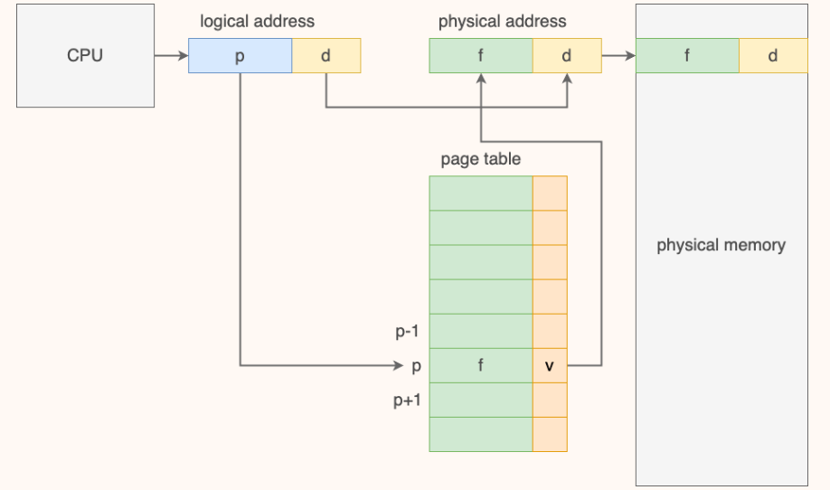
基本设计如上图，对应关系为：虚拟地址-页 <-----页表-----> 物理地址-帧
3.2.2 优化与改进¶
3.2.2.1 查询速度¶
为了加速查询，我们引入了cache中的TLB，具体流程如下：
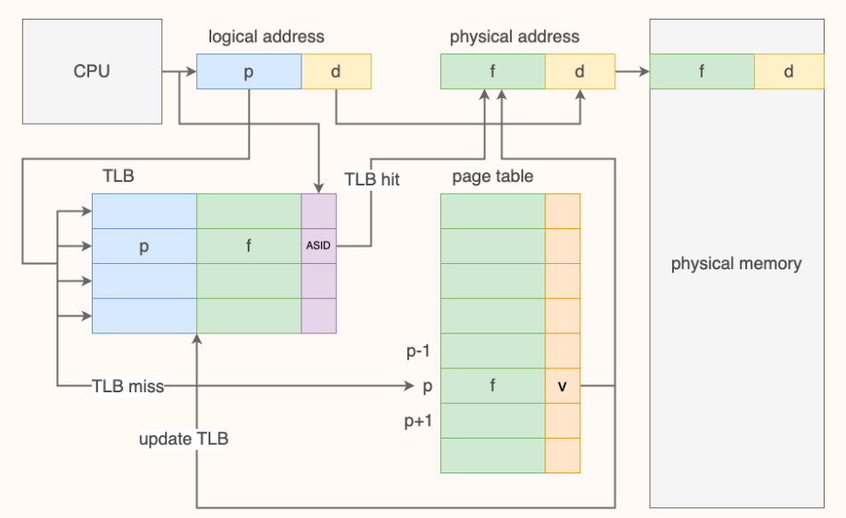
对于这个问题，我们定量分析方式如下：
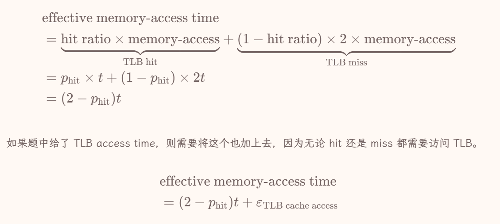
3.2.2.2 页表内存¶
为了解决页表所占内存连续且过大的问题，我们提出以下三种设计：
-
分层页表 - 使用v位减少部分不需要的映射
-
哈希页表
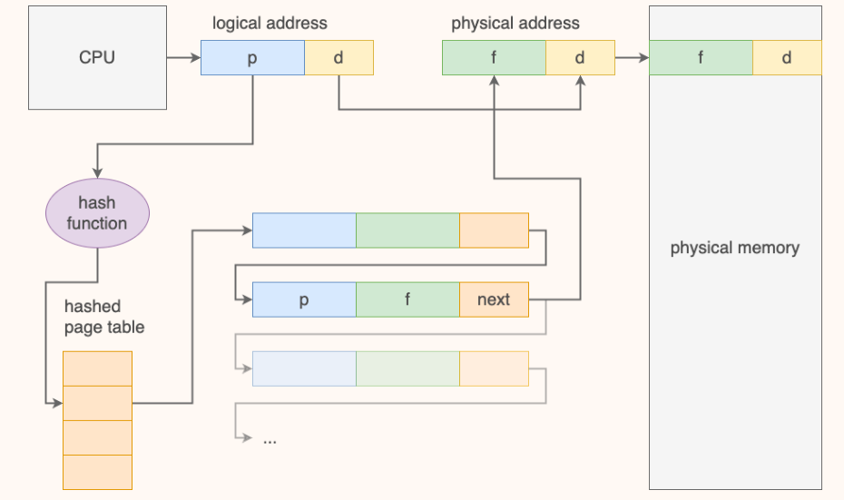
-
反式页表 - 物理地址 <----- 反式页表 -----> 虚拟地址，不支持共享页，需要遍历查询
// todo：段式设计
3.3 按需换页 demand paging¶
3.3.1 交换技术¶
- 换页：以帧/页为单位交换，只有在需要的时候将页从外部存储空间换入内存
- 交换空间（swap space）：放入这个空间的交换效率高，但是对于换入时机我们需要讨论：
- 进程被创建的时候page in
- 页第一次被换出的时候page in
- 文件系统中的页保留副本，被替换的时候直接覆盖不需要写回（？没太懂
和交换技术不同，还有一种内存压缩的方式，即把frame放回外存并利用内部碎片，将其merge（没太懂。刷题的时候再看看
3.3.2 按需换页¶
结合我们设计的页表和交换技术的思想，我们按需换页的流程如下：
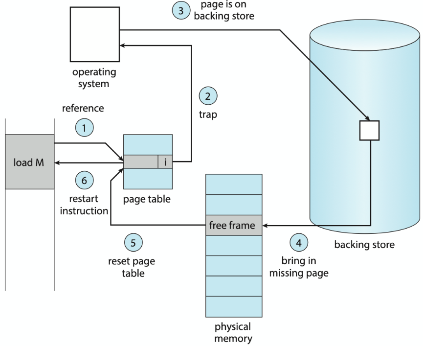
在这个过程中会有三次上下文切换（假设这次demand paging合法）：
- 产生异常进入异常处理程序
- 后备存储->内存的I/O中断
- 再次调度到page fault的指令处
这里还有一些概念，我在此简单罗列一下：
-
在这里也会有两种不同的处理方式：
-
纯按需换页pure demand paging - 只有被需求才载入内存
-
预换页pre-paging - 一开始先将需要的页载入内存
-
-
而页表中查询不到映射关系且demand paging合法的情况下也有两种可能：
- major/hard page fault - 缺了的页不在内存中
- minor/soft page fault - 缺了的页在内存中（共享页、刚被释放还没flush）
3.4 物理帧管理¶
- 可用帧列表free-frame-list - 用来记录空闲帧
- free-frame buffer pool - 保证空闲帧数量大于等于一个数，小于这个数就开始置换，可以保证进程不需要等待置换 置换范围为global
- reclaim pages - 如果空闲帧数量低于下界则置换直到空闲帧数量大于上界 - 由内核例程收割者（reapers）完成
- OOM(out-of-memory) - 特殊情况导致空闲帧数量特别少，OOM killer杀死OOM score（和进程使用内存百分比正相关）最高的进程
3.4.1 分配策略¶
- 分配界限
- 上界：空闲帧总数
- 下界：每一条指令执行所需帧最大值
- 分配算法
- equal allocation - 平均分配
- proportional allocation - 按照进程大小加权分配
- 可以在此基础上综合考虑进程优先级
3.4.2 置换策略¶
牺牲帧（victim frame）：被页置换选中的帧，选中后需要判断dirty位是否为1，如果为1则写回后备存储。写回后更新相关元信息并返回该帧作为空闲帧。
- OPT - 理论最优建模：在未来最久的时间内不会被访问到的页
- FIFO - 维护一个FIFO队列即可实现，但是对opt拟合不好
- LRU - 栈算法实现：计数器/链表序列，对opt拟合好但是开销大
- LRU Approx - 基于优化LRU开销的想法，提出的一些类LRU算法
- Additional-Reference-Bits Algorithm - 维护一个bits vector，在每个时钟中断的时候右移vector并在高位补上一个时间片内的reference bit（被使用过置
1，否则置0）；算法的LRU就对应最小vector - Second-Chance Algorithm - 循环遍历frame，检查reference bit，如果为
0则替换，为1则置0 - Enhanced Second-Chance Algorithm / NRU - 再上一个算法的基础上纳入dirty bit，考虑
(reference, dirty)，按照\((0,0)\to(0,1)\to(1,0)\to(1,1)\)的替换优先级循环遍历查找
- Additional-Reference-Bits Algorithm - 维护一个bits vector，在每个时钟中断的时候右移vector并在高位补上一个时间片内的reference bit（被使用过置
- 基于计数的替换 - counter表示被使用的次数
- LFU - 选择counter最小的frame作为victim frame
- MFU - 选择counter最大的frame作为victim frame
置换范围：
- local - 置换只发生在当前进程的帧中
- global - scope的所有帧（受frame下界约束）
- priority replacement - 只允许高优先级的进程替换低优先级的frame
3.5 抖动 - thrashing¶
抖动定义：几乎所有frames都在被使用，几乎每次置换都会有一次page fault
解决方法：
- priority replacement algorithm - 本质还是循环抢占，规定抢占方向（？）就可以避免这个问题
- working set
- 判定是否会thrashing：将每一个进程在一个\(\Delta\)时间窗口内用到过的frame建模为工作集\(WS_i\)，判断工作集之和和可用frame总量，如果大于则会thrashing
- 解决thrashing：挂起部分进程
- PFF - 缺页频率：与可用帧数量大致负相关，设定上下界进行负反馈控制
3.6 内核内存¶
避免内存碎片、保障连续性。
- Buddy系统 - 通过二分的方式找到合适的内存，并在需要的时候可用合并回更大的内存
- Slab分配 - 预先了解到内核常见数据结构大小 \(\to\) 将对应大小的内存块注册到cache \(\to\) 需要的时候分配对应大小的内存
4 输入/输出¶
4.1 定义¶
- 总线bus - 硬件与协议的统一，连接各个硬件传输数据
- 端口port - 设备与总线连接点
- 控制器controller - 控制硬件的设备组成
4.2 I/O方式¶
4.2.1 轮询polling¶
CPU不断向controller查询状态直至可以完成I/O
4.2.2 中断Interrupt¶
CPU提出I/O请求 \(\to\) 调走进程 \(\to\) I/O设备处理 \(\to\) 向CPU发送中断，CPU对该进程做处理
4.2.3 DMA¶
内存和I/O设备直接交互，CPU向DMA controller发送命令 \(\to\) DMA处理完成后controller向CPU发送中断
4.3 I/O接口¶
各设备区别：
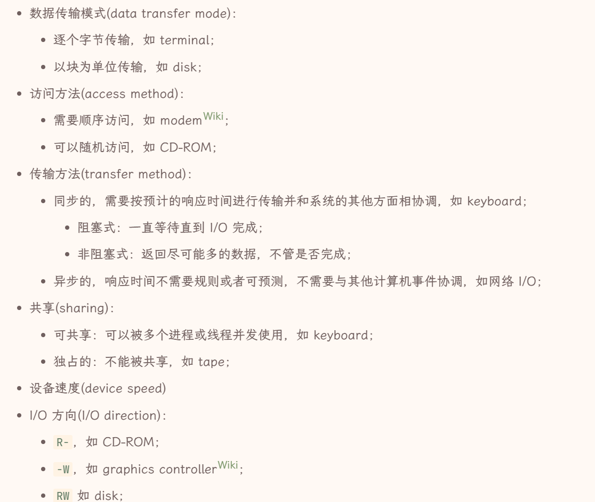
利用driver和controller屏蔽不同设备区别：
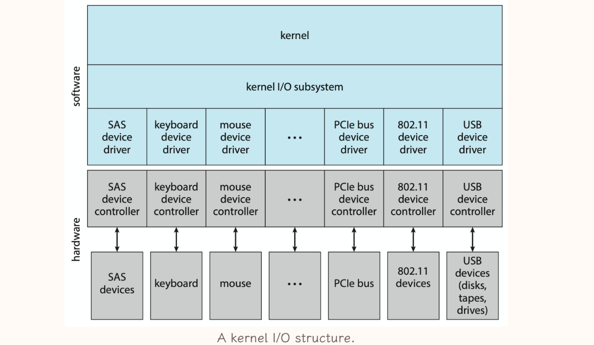
5 存储¶
我现在觉得这块复习得很不充分、、到时候再看看
5.1 硬盘 - HDD¶
属于易失性内存。
5.1.1 I/O流程及开销计算¶
- 磁头r/w heads\(\to\)柱面cylinders\(\to\)磁道tracks - 寻道时间seek time
- 磁头\(\to\)扇区sectors - 旋转时延rotational latency - 平均旋转时延\(\frac{1}{2} · \frac{1}{rpm} · 60s\)
- 和寻道时间相加是average access time（开销大头，距离越远开销越大）
- 数据传输 - 传输时间transfer time = \(\frac{\text{data to transfer}}{\text{transfer rate}}\)
此外计算average I/O time的时候还要加上控制器开销controller overhead
而评估I/O性能的指标为disk bandwidth = \(\frac{\text{传输数据量}}{{请求开始到传输完成的时间间隔}}\)
5.1.2 调度算法¶
默认会选择SSTF，I/O较为频繁的时候用LOOK或者C-LOOK
5.1.2.1 FCFS¶
没有优化。
5.1.2.2 SSTF¶
- 低平均响应时间、高吞吐量
- 不是理论最优、方差大、饥饿问题、seek time计算开销
5.1.2.3 SCAN¶
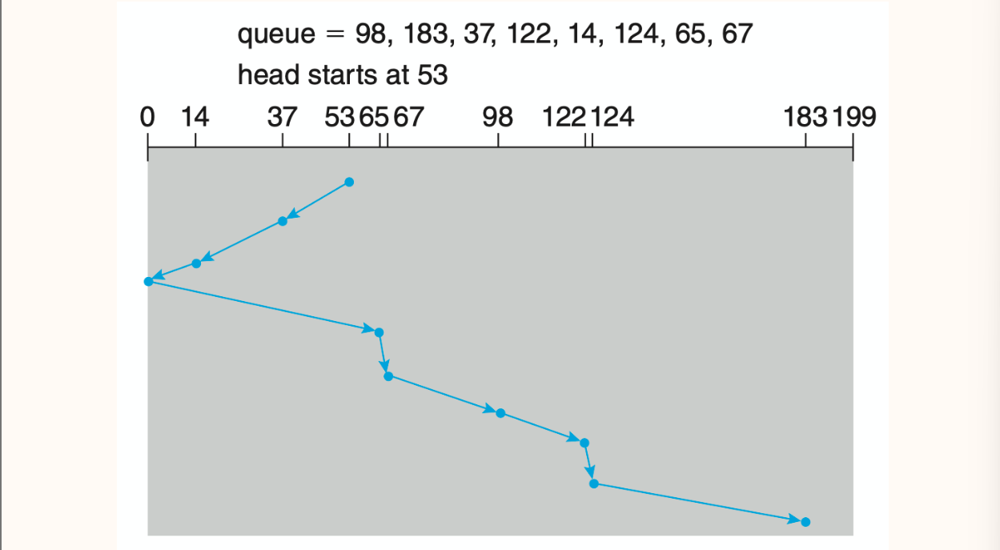
- 低平均响应时间、低方差、高吞吐量
- 部分磁头刚刚经过的地方的请求要等待的时间更长
5.1.2.4 LOOK¶
在SCAN的基础上走到最靠近边界的请求对应的LBA就提前掉头 - 减少不必要的SCAN
5.1.2.5 C-SCAN¶
在SCAN的基础上到达边界的时候径直返回另一端
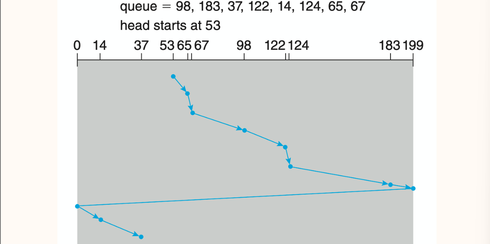
- 等待时间比SCAN更均匀
5.1.2.6 C-LOOK¶
在C-SCAN的基础上走到最靠近边界的请求对应的LBA就提前掉头 - 减少不必要的C-SCAN
5.2 非易失性内存 - NVM¶
例如固态硬盘SSD
- 没有寻道时间和旋转时延，比HDD更可靠快速小巧功耗低，价格更贵
- 瓶颈在总线传输速率 - 会直接连接到系统总线
- 以page粒度读写，必须先擦后写
- 由若干die组成，支持并行
- 擦除操作导致存在寿命
5.3 存储介质管理技术¶
jjm复习课：要知道windows和Linux系统的交换空间的基本形式。
5.3.1 初始化流程¶
- 低级格式化 - 实现自身结构化管理
- 分扇区、创建映射和闪存转换层
- 为扇区或页维护数据结构信息，将数据包装为 header + data + tail 的形式（元数据）
- “由于扇区数量与 header & tail 占用的空间正相关，所以扇区越大一般意味着用户可用空间越大。”没懂。
- 将坏块映射到不可见的备用分区
- 记录操作系统所需数据结构
- 分区partitioning - 将存储空间划分为一个个单独的logical disk
- 卷创建与卷管理volume creating & management - 划定文件系统覆盖的范围
- 逻辑格式化logical formatting - 在卷上创建和初始化文件系统
5.3.2 RAID - 独立磁盘冗余阵列¶
使用冗余的方法解决硬盘的不可靠问题（具体可以看数据库笔记）。
5.4 I/O设备分类¶
- character device 字符设备 - 按字符流进行读写操作的设备，按字节流顺序读写，实时性要求高，没有缓存机制。
- e.g. 键盘、鼠标、串口、终端等；
- block device 块设备 - 数据以固定大小的块进行读写，具有随机访问的能力。
- e.g. 硬盘、SSD等；
6 文件系统¶
6.1 文件系统¶
- 文件系统FS：数据存储形式的逻辑视图
- 文件系统挂载mount - 把一个文件系统的根目录挂载到另一个文件系统的mount point（某个目录）使得其可以访问被挂载的文件系统
- 分层设计：
- application programs
- logical file system - 维护目录信息（不包括内容）
- file-organization module - 实现文件逻辑地址到物理地址的映射，管理空闲空间
- basic file system - 参与I/O调度，管理内存缓冲区和cache
- I/O control - 与具体设备交互的接口
- devices
- 数据结构：
- 硬盘数据结构
- boot control block (per volume)
- volume control block (per volume)
- directory structure (per FS)
- file control block (per FS)
- 内存数据结构
- mount table
- directory cache
- system-wide open-file table
- per-process open-file table
- buffers
- 硬盘数据结构
- 虚拟文件系统VFS
- 封装具体文件操作以支持不同文件系统
- 为文件系统提供唯一标识文件的数字提示符
- 性能与安全：页缓冲、恢复、日志系统
- 典型文件系统（todo：参考笔记不全，待刷王道完善）
- ext
- FAT
- NTFS
6.2 目录¶
- 目录：文件进行结构化组织和管理的方式，实现filename到FCB的映射（目录项：filename和指向FCB/Inode的指针）
- 单级目录 - 文件名必须唯一，按文件名索引
- 多级目录不同目录下文件名可以相同
- 二级目录 - 主文件目录MFD下为每个用户分配一个用户文件目录UFD，按文件路径索引
- 树形目录 - 叶子节点是非目录节点，非叶子节点是目录节点，按文件路径索引
- 无环图目录 - 在树形目录基础上允许链接关系
- 软链接soft link/符号链接symbolic link - 特殊的文件，指向文件的指针，删除文件不会删链接而是使得链接失效
- 硬链接hard link - 目录表项，复制所有元信息；需要维护一致性，删除使用reference counter维护；无法跨越文件系统
- 通用图目录 - 在无环图目录基础上允许存在环，通过算法避免问题
- 单级目录 - 文件名必须唯一，按文件名索引
- 实现方法：
- 线性检索法
- 哈希表法
6.3 文件¶
-
文件：数据在硬件存储的抽象
-
文件控制块FCB：维护被打开文件具体信息（权限、操作日期、ACL、大小、所在地址）
- UFS中指的是一个inode；NTFS中在master file table中被维护
-
文件属性：也被称为元数据，不同系统下包括不同的文件属性，例如
name、identifier、type、location、size、protection、timestamp和user identification等 - 文件操作：
create- 文件系统中为文件分配空间、创建FCB + 目录中创建对应条目、更新父目录信息open/close- 对文件的操作通过打开文件后获得的句柄handle完成
- 打开文件表open-file table：保存被打开文件的信息（句柄、位置、访问权限）
- 当前文件被打开次数open-file count - 在
delete的时候如果-1后为0则释放空间 - 系统调用
open()的时候先在这里找（找到说明其他进程正在使用，付出额外一些开销即可使用），找不到再去目录结构找
- 当前文件被打开次数open-file count - 在
read/write- 当前操作位置current-file-position pointer
repositioning/seek- 把pointer重新定位到给定值
truncate- 清空文件内容，保留文件属性locking
- 权限保护：访问控制列表ACL（性价比低，表项可能不定长）；访问权限位access permission bits
- 文件类型：数据；程序。UNIX系统使用magic number标识
- 文件结构：无结构（流式存储）；简单记录结构（以record为单位存储）；复杂结构。
- 访问方式：
- 顺序访问sequential access
- 直接访问direct access/相对访问relative access/随机访问random access - 访问任意位置的时间几乎相同
- 索引顺序访问indexed sequential-sccess
6.4 块分配与块组织¶
这块会考计算题。
连续contiguous
每个文件占用一段连续的block，目录记录文件名和起始地址、长度。
- 文件变小 - 产生外部碎片
- 解决方式 - compacts，先迁移再存放消除空隙，但是开销大
- 文件变大 - 可能需要迁移文件
- 解决方式 - extent，分配新的空间链接到原始空间后面
链接linked
目录记录文件名、起始地址和结束地址，每个block记录指向下一个block的指针（valid block size需要减去指针的长度）。
- 无法随机访问
- 指针需要额外存储空间
- 使用多个连续块为一个链节的簇cluster减少指针的额外开销
索引indexed
目录记录文件名和index block，index block中顺序存放指向文件所有block的指针。
当一个index block不够的时候我们的解决方案：
- 链接索引
- 多级索引
- 各多级索引混合模式 - 容易出计算题，要理解
6.5 空闲空间管理¶
-
位图bitmap
-
用一个bit
0/1标识该block是否空闲。 -
容易得到连续空间，bit和block相邻关系一致。
-
-
链表 - 将空闲的block连起来
- 分组 - n个空闲块地址存放第0个空闲块中，在第n个空闲块存储后n个空闲块的地址
- 计数 - 维护每个连续内存段起始地址和长度（块数）
嘿嘿第一轮完结撒花！不过预计还有很多需要补充的，后续刷王道会慢慢update上去！
2024.12.19
考完补充： 因为各种各样的原因（比如bs和让人难以兼顾的考试安排）所以一轮之后就没怎么动过笔记了（x。后期的复习主要以刷王道考研真题和季江民老师的小测作业为主。上述笔记应该包含了所有操作系统的主干知识（导致很多东西看来看去也就这点东西不知道再看什么了），但是这个考试有40道选择，会考很多奇奇怪怪的概念和细碎的知识点（我真懒得喷，，），所以还是有必要在最后复习的时候看一下这些东西（具体怎么复习我也不是很清楚，感觉期末考得不算好，可能看看ppt或者王道？）。A4可以早点准备，一边打印下来一边复习补充，毕竟3张A4的作用还是很大的，不提前准备的话并不能完全发挥作用。附上我的A4。